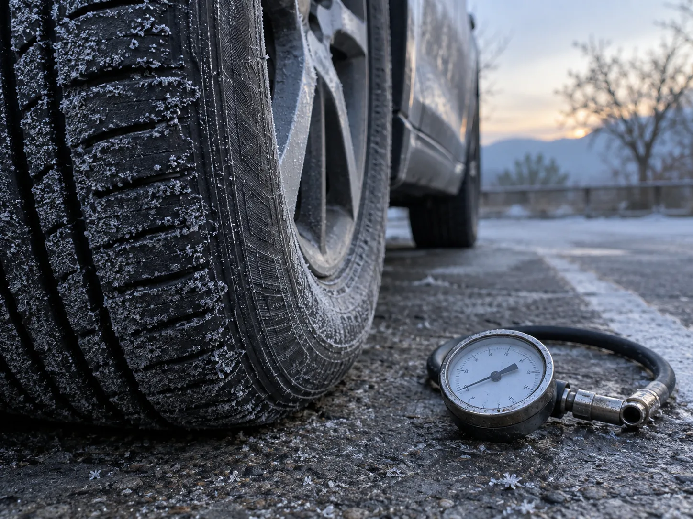
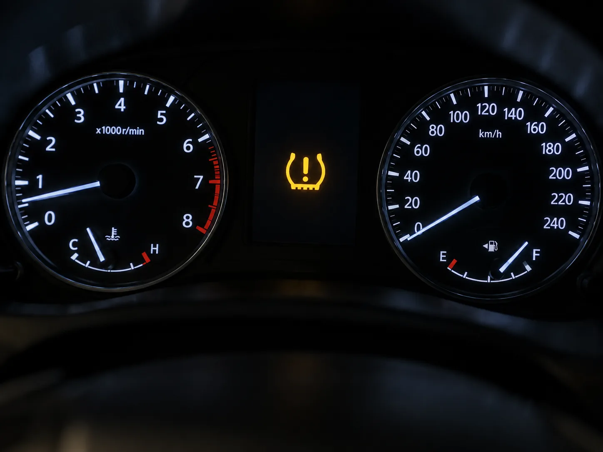
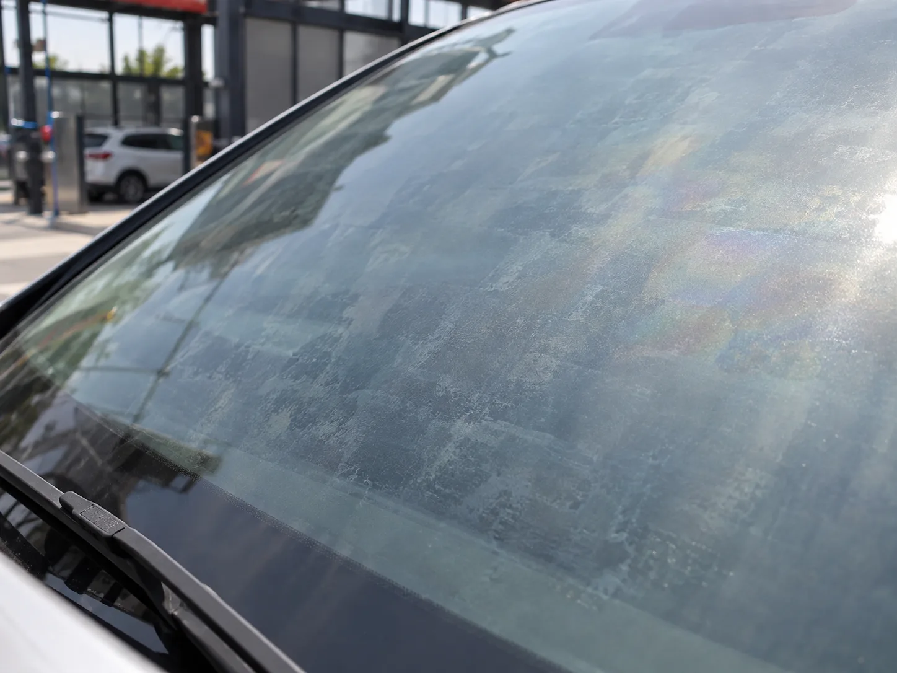
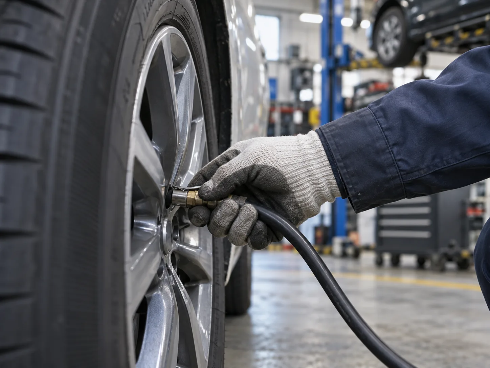

▲ 일교차가 큰 가을 새벽, 타이어 내부 공기도 자동차 밖 기온을 따라 수축한다
1. 사고도 펑크도 없었는데, 왜 하필 가을에 경고등이 뜰까
9~10월로 접어들면 카센터와 온라인 커뮤니티에 "어제까지 멀쩡했는데 아침에 타이어 공기압 경고등이 떴다"는 글이 부쩍 늘어난다. 대부분 타이어에 이상이 생긴 게 아니라 밤사이 뚝 떨어진 기온 때문이다. 낮에는 20도를 훌쩍 넘다가 새벽에는 10도 안팎까지 떨어지는 요즘 같은 일교차 구간에서, 타이어 내부에 갇힌 공기도 부피와 압력이 기온을 따라 함께 줄어든다. 여름철 기사에서 다룬 '더워서 압력이 높아지는' 현상과 정반대로, 가을에는 '식어서 압력이 낮아지는' 현상이 문제가 된다.

▲ 사고나 펑크 없이도 기온만 떨어지면 이 경고등이 켜질 수 있다 ⓒ AI 생성 이미지
이미 카프리즘에서는 TPMS 경고등이 켜졌을 때 대처 순서를 다룬 적이 있다. TPMS 경고등 대처법 기사 보기 이번에는 그 경고등이 '왜 하필 요즘 자주 뜨는지', 계절적 원인에 초점을 맞췄다.
2. 기온 1도에 공기압이 얼마나 바뀔까 — 수치로 보는 관계
타이어 공기압은 밀폐된 기체의 부피·압력·온도가 서로 비례하는 기체 법칙을 그대로 따른다. 업계에서 통용되는 경험칙은 '기온이 10도 떨어질 때마다 타이어 공기압은 약 1~2psi(0.07~0.14bar) 낮아진다'는 것이다. 반대로 기온이 10도 오르면 공기압은 비슷한 폭으로 올라간다. 하루 최고·최저 기온차가 10~15도까지 벌어지는 가을철 특성상, 아침저녁으로만 봐도 공기압이 1~3psi가량 오르내릴 수 있다는 뜻이다.
| 기온 변화 | 공기압 변화 | 비고 |
|---|---|---|
| 10도 하락 | 약 1~2psi 감소 | 가을~겨울철 자연 감소 |
| 10도 상승 | 약 1.6psi 증가 | 여름철 주행 후 온간 상태 포함 |
| 겨울철 누적 | 최대 5psi까지 감소 | 기후에 따라 편차 큼 |
여름철에는 뜨거운 노면 위에서 주행 중 열팽창으로 공기압이 오히려 높게 측정돼 '바람을 빼야 하나' 고민하게 만든다면, 가을철에는 정반대로 정차 중 자연 냉각만으로 공기압이 슬금슬금 낮아진다. 여름철 타이어 공기압 관리 기사 보기 같은 타이어라도 계절에 따라 정반대 대응이 필요한 이유다.
3. TPMS 경고등, 정확히 몇 psi부터 켜질까

▲ 경고등이 켜지면 가장 먼저 할 일은 네 바퀴 공기압을 직접 재보는 것이다 ⓒ AI 생성 이미지
국내에 판매되는 승용차는 2013년 1월 신규 모델부터, 2014년 6월부터는 모든 승용차에 TPMS 장착이 의무화됐다. TPMS는 공기압이 제조사 권장 공기압 대비 약 25% 이상 낮아지면 계기판에 경고등을 띄우도록 설계돼 있다. 예를 들어 운전석 문틀 라벨에 적힌 권장 공기압이 35psi(약 241kPa)인 차량이라면, 실제 압력이 26psi(약 180kPa) 아래로 내려가야 경고등이 켜진다는 뜻이다. 국산 승용차·도심형 SUV의 권장 공기압은 대체로 32~38psi 범위에 몰려 있는데, 정확한 수치는 차마다 다르므로 운전석 문틀 안쪽이나 연료 주입구 뚜껑 안쪽의 스티커를 확인하는 게 가장 정확하다.
4. 냉간 공기압, 제대로 재는 법
공기압은 '냉간 상태'를 기준으로 점검해야 정확하다. 냉간 상태란 차량이 최소 3시간 이상 완전히 정차해 열이 식었거나, 주행거리가 1.6km 미만인 상태를 말한다. 이미 몇 십 분 이상 주행해 타이어가 데워진 상태에서 측정한 값은 열팽창 때문에 실제보다 높게 나오므로, 이 수치에 맞춰 바람을 뺐다가는 정작 타이어가 식은 다음 심각한 저압 상태에 빠질 수 있다. 부득이 온간 상태에서 공기를 채워야 한다면 권장 공기압보다 3~4psi(약 10%) 더 높게 주입한 뒤, 다음 날 냉간 상태에서 다시 확인하는 것이 안전하다.

▲ 공기압 보충 후에는 일정 거리를 주행해야 TPMS 센서 값이 갱신된다 ⓒ AI 생성 이미지
공기압을 채운 뒤 경고등이 바로 꺼지지 않는 경우도 흔하다. TPMS 센서가 새 압력값을 인식하려면 시속 25~30km 이상 속도로 5~10분가량 연속 주행해야 하는 경우가 많으니, 주유소에서 공기를 채운 직후 경고등이 그대로라고 당황할 필요는 없다.
5. 여름철·상시 경고등 기사와 뭐가 다른가 — 가을철 체크리스트
카프리즘은 앞서 폭염 속 공기압 관리법과 TPMS 경고등 대처 순서를 각각 다뤘다. 이번 기사가 다루는 것은 그 둘 사이, 즉 '사고도 펑크도 아닌데 기온만으로 공기압이 자연스럽게 빠지는' 가을철 특유의 상황이다. 여름철 기사가 '열팽창으로 높아진 압력을 임의로 빼지 말라'는 경고였다면, 이번엔 '아무것도 하지 않아도 일교차만으로 압력이 빠진다'는 정반대 방향의 이야기다.
| 단계 | 확인 사항 |
|---|---|
| 1 | 운전석 문틀 라벨에서 차량 권장 공기압(냉간 기준) 확인 |
| 2 | 최소 3시간 이상 주차한 냉간 상태에서 네 바퀴 공기압 직접 측정 |
| 3 | 권장치보다 낮으면 보충, 온간 상태라면 3~4psi 더 높게 주입 후 재확인 |
| 4 | 보충 후 25~30km/h 이상으로 5~10분 주행해 TPMS 센서 값 갱신 |
| 5 | 경고등이 반복적으로 켜지면 단순 자연 감소가 아닌 미세 누기 여부를 정비소에서 점검 |
일교차가 큰 계절일수록 한 달에 한 번은 냉간 공기압을 직접 확인하는 습관이 필요하다. 경고등에 의존하기보다, 기온이 뚝 떨어진 다음 날 아침 5분만 투자하면 예방할 수 있는 문제다.